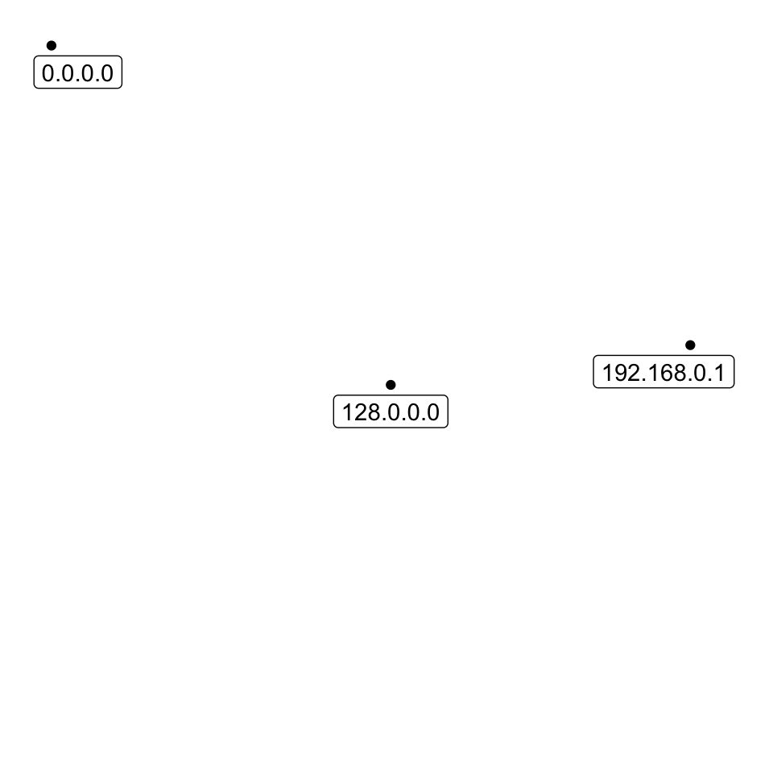
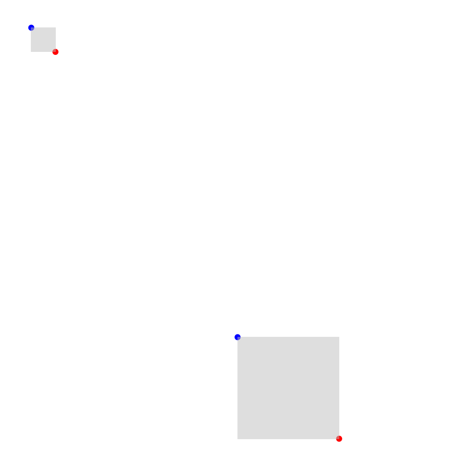

A ggplot2 coordinate system that maps a range of IP address space onto a two-dimensional grid using a space-filling curve.
coord_ip() forms the foundation of any ggip plot. It translates all
ip_address and ip_network
vectors to Cartesian coordinates, ready for use by ggplot2 layers (see
Accessing Coordinates). This ensures all layers use a common mapping.
coord_ip( canvas_network = ip_network("0.0.0.0/0"), pixel_prefix = 16, curve = c("hilbert", "morton"), expand = FALSE )
| canvas_network | An |
|---|---|
| pixel_prefix | An integer scalar that sets the prefix length of the network represented by a single pixel. The default value is 16. Increasing this effectively improves the resolution of the plot. |
| curve | A string to choose the space-filling curve. Choices are
|
| expand | If |
coord_ip() stores the result of the mapping in a nested data frame column.
This means each ip_address or
ip_network column in the original data set is
converted to a data frame column. When specifying ggplot2 aesthetics, you'll
need to use $ to access the nested data (see Examples).
Each ip_address column will be replaced with a
data frame containing the following columns:
| Column name | Data type | Description |
ip | ip_address | Original IP data |
x | integer | Pixel x |
y | integer | Pixel y |
Each ip_network column will be replaced with a
data frame containing the following columns:
| Column name | Data type | Description |
ip | ip_network | Original IP data |
xmin | integer | Bounding box xmin |
ymin | integer | Bounding box ymin |
xmax | integer | Bounding box xmax |
ymax | integer | Bounding box ymax |
vignette("visualizing-ip-data") describes the mapping in more detail.
options(tidyverse.quiet = TRUE) library(tidyverse) library(ipaddress) tibble(address = ip_address(c("0.0.0.0", "128.0.0.0", "192.168.0.1"))) %>% ggplot(aes(x = address$x, y = address$y, label = address$ip)) + geom_point() + geom_label(nudge_x = c(10, 0, -10), nudge_y = -10) + coord_ip(expand = TRUE) + theme_ip_light()tibble(network = ip_network(c("0.0.0.0/8", "224.0.0.0/4"))) %>% mutate( start = network_address(network), end = broadcast_address(network) ) %>% ggplot() + geom_point(aes(x = start$x, y = start$y), color = "blue") + geom_point(aes(x = end$x, y = end$y), color = "red") + geom_rect( aes(xmin = network$xmin, xmax = network$xmax, ymin = network$ymin, ymax = network$ymax), alpha = 0.5, fill = "grey" ) + coord_ip(curve = "morton", expand = TRUE) + theme_ip_light()